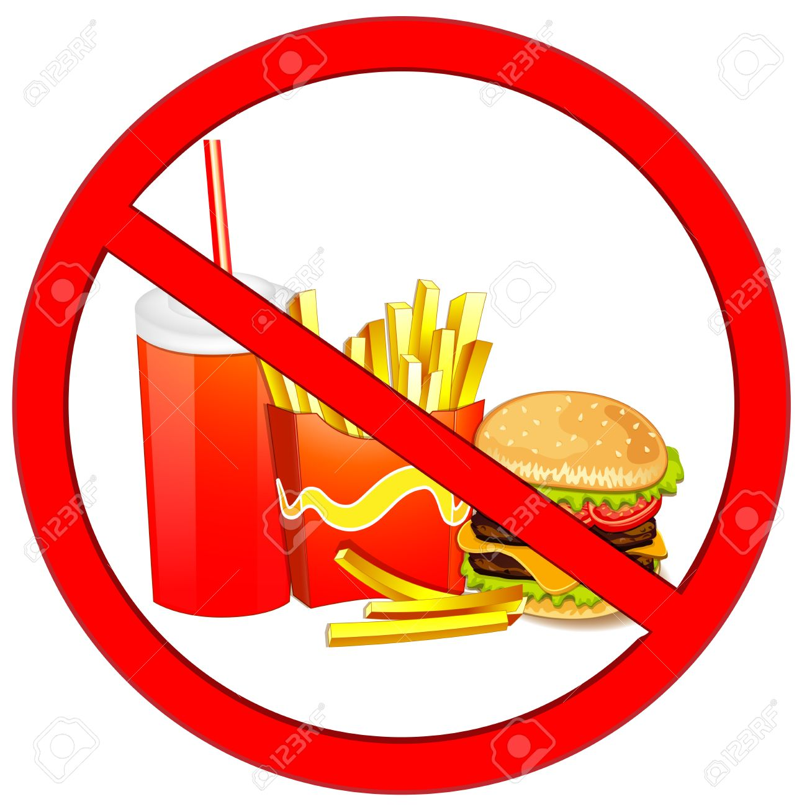

Tips...
Some tips for excercise
- 1-SET REALISTIC GOALS
- It may take some time to get the results you want. It’s vital to break your ultimate goal down in to stages and set lots of smaller goals to keep you motivated along the way.
- 2-BE CONSISTENT
- Results come through regular and consistent activity. Stick to your programme and avoid frequent stops and starts.
- 3-TOO MUCH TOO SOON
- Do not increase the amount of exercise you do too soon. Increase what you’re doing by no more than 10% per week.
- 4-ACCEPT FEELINGS OF DISCOMFORT
- When you first start exercising you’ll experience feelings of discomfort such as shortness of breath, sweating and aching muscles after exercising. Don’t worry, this is completely normal and everyone feels like this when they’re first starting out.
- 5-WARM UP
- Not warming up is a mistake many player make. Before any session ensure that you warm up thoroughly and mobilise the areas that you will be using during the workout. Furthermore, failure to warm up properly may increase the risk of injury.
- 6-TRY SOMETHING NEW
- Keep things interesting by trying new exercises, workouts and activities to keep your programme fresh, keep challenging your body and preventing boredom.
- 7-TIME OF DAY
- We are all different. Some of us rise early and some of us go to bed late. Exercise at the time when you feel that you have most energy.
Some tips for nutrition
- 1-Limit sugary drinks
-
Sugary drinks like sodas, fruit juices, and sweetened teas are the primary source of added sugar in the American diet.
Unfortunately, findings from several studies point to sugar-sweetened beverages increasing risk of heart disease and type 2 diabetes, even in people who are not carrying excess body fat.
Sugar-sweetened beverages are also uniquely harmful for children, as they can contribute not only to obesity in children but also to conditions that usually do not develop until adulthood, like type 2 diabetes, high blood pressure, and non-alcoholic fatty liver disease.
Healthier alternatives include:- water
- unsweetened teas
- sparkling water
- coffee
- 2-Avoid ultra-processed foods
-
Ultra-processed foods are foods containing ingredients that are significantly modified from their original form. They often contain additives like added sugar, highly refined oil, salt, preservatives, artificial sweeteners, colors, and flavors as well
Examples include:- snack cakes
- fast food
- frozen meals
- chips
 - 3-Eat nuts and seeds
-
Some people avoid nuts because they are high in fat. However, nuts and seeds are incredibly nutritious. They are packed with protein, fiber, and a variety of vitamins and minerals.
Nuts may help you lose weight and reduce the risk of developing type 2 diabetes and heart disease.
Additionally, one large observational study noted that a low intake of nuts and seeds was potentially linked to an increased risk of death from heart disease, stroke, or type 2 diabetes. - 4-Eat plenty of fruits and vegetables
-
Vegetables and fruits are loaded with prebiotic fiber, vitamins, minerals, and antioxidants, many of which have potent health effects.
Studies show that people who eat more vegetables and fruits tend to live longer and have a lower risk for heart disease, obesity, and other illnesses.
- 5-Eat adequate protein
-
Eating enough protein is vital for optimal health, as it provides the raw materials your body needs to create new cells and tissues.
What’s more, this nutrient is particularly important for maintenance of a moderate body weight.
High protein intake may boost your metabolic rate or calorie burn while making you feel full. It may also reduce cravings and your desire to snack late at night. - 1-Water Helps With Weight Loss
-
Some studies suggest that increasing your water may help in the weight loss process, especially when consumed instead of other high-calorie beverages. Replacing calorie-sweetened beverages with water can result in weight loss as well by reducing overall calorie intake.
People often confuse thirst for hunger, which can promote weight gain. Proper hydration has been linked to better portion control and improved weight loss results.
Nutrition experts often recommend assessing your fluid intake if you are feeling fatigued. Inadequate hydration can lead to feelings of tiredness and fatigue. A simple test for dehydration versus hunger has shown to help with portion control.
Drinking water throughout the day can also reduce the desire to consume sugar sodas or juices.
A study on water-induced thermogenesis demonstrated that drinking cold water increases energy expenditure in the body. The increase in energy appears to be created by the body's effort to warm the water up to body temperature.This theory would help explain the boost to metabolism and increased weight loss.
But keep in mind that the study had substantial limitations and this is not a magical way to lose weight. This study only included 50 girls for a short amount of time (8 weeks). More research is needed to confirm this theory.
- 2-Water Keeps Our Skin Healthy
-
Do you suffer from dry and lifeless skin? You might need to drink more water. Clear skin starts from within and benefits from proper hydration.
The body loses water through sweat—especially during a workout and in hot environmental conditions. Drinking water ensures rehydration and replenishment of the natural lubrication to our skin.
Your skin loves moisture. Drinking plenty of water helps restore suppleness and eliminates dryness.
Using lotion to help moisten your skin is fine too, but drinking water remains the primary way to maintain well-hydrated skin.

Water
The human body is made up of over 60 percent water. Research continues to report positive findings on why drinking plenty of water every day is essential to good health.
Our bodies need water to maintain hydration, digestive, heart, and lung function, joint lubrication, protection of tissues, regulation of body temperature, and much more.
Water can be considered our lifeline and its health benefits are endless. It keeps us feeling, functioning, and even looking our best.
its benefits include:
How Much Water Should I Drink?
Our water requirements are met through what and how much we drink, as well as a small amount from the food we eat. Water requirements differ from one person to the next based on age, environment, and activity levels.
The Food and Nutrition Board released new dietary reference intakes for water stating: "It is recommended that women consume 2.7 liters (91 oz.) daily and men consume 3.7 liters (125 oz.) through various beverages (80%) or in food (20%).”
We lose water as part of normal bodily functions like sweating, breathing, and going to the bathroom. If we are physically active, in a hot climate, running a fever, or have symptoms like diarrhea or vomiting, even more fluid is lost.
All water loss needs to be replaced to keep your body healthy and hydrated. Not sure if you're drinking enough every day? Check the color of your pee. Healthy urine is fairly clear and is a good indicator that you're drinking plenty of water.